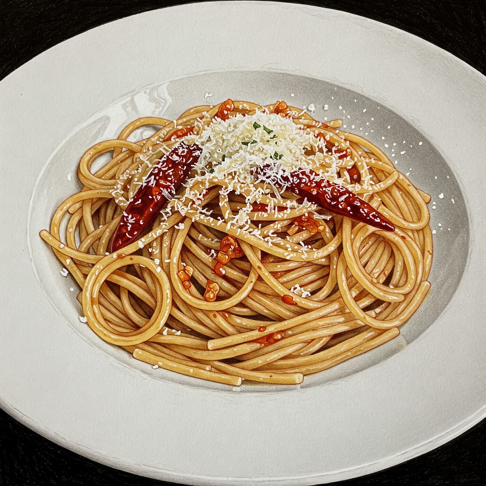

ペペロンチーノのレシピ

材料
- スパゲッティ 200g
- オリーブオイル 大さじ2
- にんにく 2片
- 赤唐辛子 2本
- 塩 適量
- 粉チーズ 適量
作り方
- スパゲッティを塩を加えたたっぷりの湯で茹でる。
- フライパンにオリーブオイルと薄切りにしたにんにく、赤唐辛子を入れ、弱火で香りが出るまで炒める。
- 茹で上がったスパゲッティをフライパンに加え、よく混ぜる。
- 塩で味を調え、最後にお好みで粉チーズをふりかけて完成。
注意点
- 赤唐辛子を触った手で目をいじらないようにしてください。激しい痛みや腫れの原因となります。